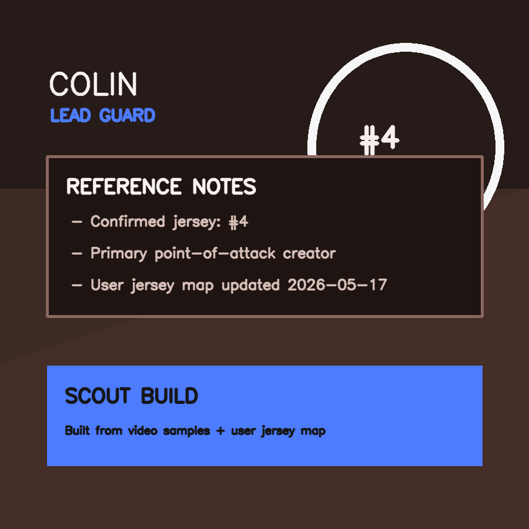
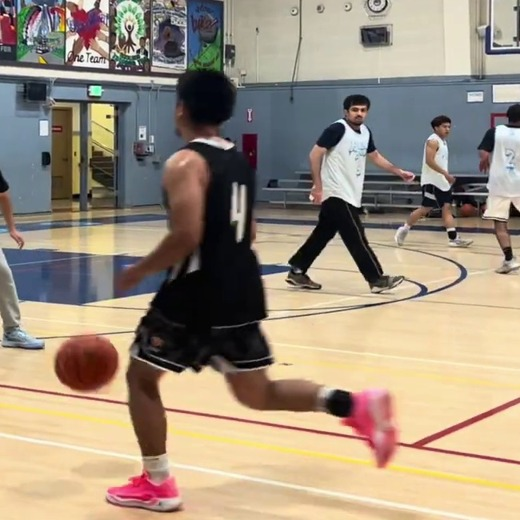
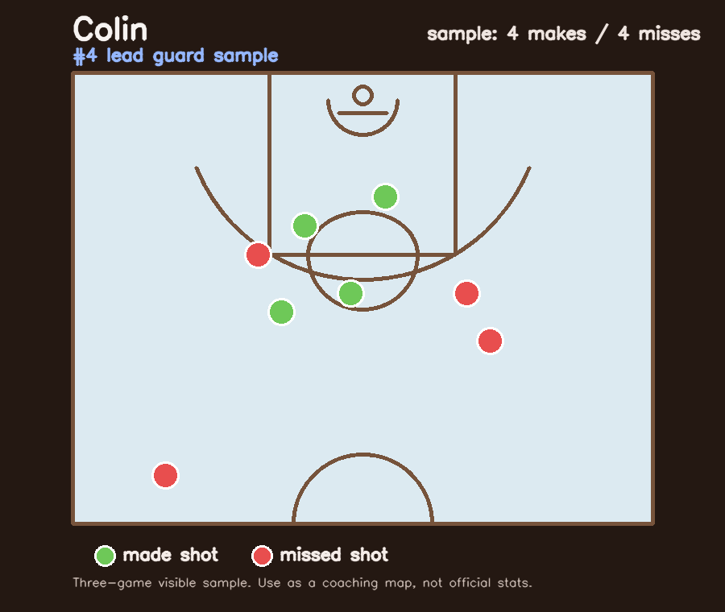

Confirmed Core
Colin
Lead guard / first-touch creator / #4
Confirmed jersey: #4. Main point-of-attack initiator in this build.



Tendencies
Starts a lot of possessions from the left slot or high middle, probing with live dribble before deciding whether to score or move it.
Hot Zones
Best reads point to left-slot three, top-of-arc reset threes, and middle-lane pull/float finishes after the first step wins.
First Move / Release
Likes a measured jab or slow bounce into a right-hand burst. Release is compact and fast, closer to a one-motion push than a high-lift jumper.
Weakness
Gets less comfortable when the first lane is crowded and the drive gets pushed wide. The sample is more forgiving from his deeper right-side pull-up and lower-percentage sideline looks than from his left-slot rhythm touches.
How To Guard
Make the first dribble go wide. Sit on the inside lane, crowd the gather, and force him to become a passer over length.